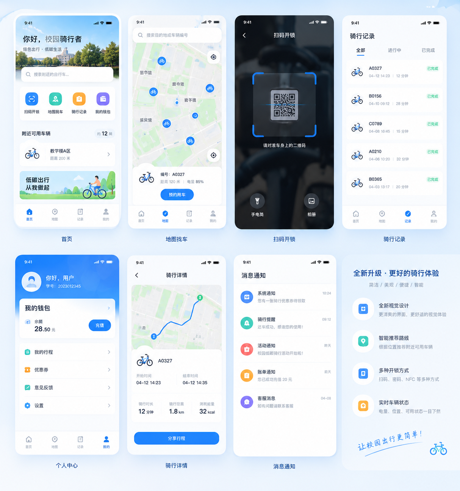
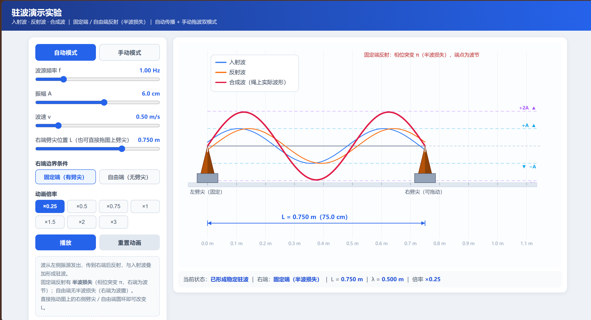

个人简介与相关兴趣
我是一名 2025 级人工智能（人机物智能创新班）学生。理想主义者：乐观、不服输， 认定的事就一直追；协作里愿意把活扛起来，也认真到近乎完美主义。
悟已往之不谏，知来者之可追。
过去一年我困在自己的心结里——从得知录取起反复内耗，五月还想复读， 学业荒废了许多。后来才认清算账：沉没成本太高。抓不住昨天，也决定不了明天， 能握紧的只有当下。
大二我开始追赶。暑假补完通识基础与 C 语言、数据结构； 现在自学 Python / PyTorch、单片机与深度学习，认真学数电与传感器—— 这条路正通向我想做的小车巡航。
生活里我也爱折腾，永远对新事物保持兴趣。十二岁起跟着网上米粉发烧友学刷机，root、越狱，甚至给小米手机刷过 ColorOS； 后来自己买配件修手机：换电池、换屏、组装零件。动手这件事，我一直比较有信心。
性格
理想主义 · 乐观不服输 · 目标坚定
协作
沟通顺、愿意分担，把事做完整。
此刻在学
Python / PyTorch · 单片机 · 深度学习 · 数电 · 传感器
动手
刷机、修机、组装——从数码硬件长出来的工程感。
工程落地实操
行是知之始，知为行之成。
从真实痛点出发做完整产品：需求 → 方案 → 实现 → 验证。 推着我往前的，始终是兴趣与求索的冲动；而每一个真正落地的目标，都值得好好喝彩。 下面是两个已动手的工程实践，分别覆盖移动端定位与可交互物理演示。
落点 App
落处留痕，点引归程。
「落点」是一款高精度定位记录工具：把「记下一个可用的落点」做到可靠。 四档精度策略覆盖室内弱信号到室外高精度；采样质控（多点均值、2σ 剔除、海拔一致性）筛掉不可靠结果； 真机实测反复校正算法与交互。当前版本 v1.1，含签名安装包。
功能要点
- 四档精度引擎
- NFC 碰一碰记录
- 采样质控
- 一键导航找回
- 自绘精度滑杆
- 多选管理
其中 NFC 碰一碰：把贴纸贴在自行车、行李箱等物体上，碰一下即触发记录， 把「记录」动作直接绑在要找的东西上；无 NFC 的机型仍可手动记录。
技术实现
Android 原生（Java）。双通道数据源（FusedLocationProvider ＋ LocationManager）互补兜底； WGS-84 存储、跳转国内地图时转 GCJ-02；定位任务可取消、切后台自动终止； SharedPreferences 持久化（已列入结构化存储改造）。
未来：从「点」到「迹」
落点记的是一个点，下一步让点连成线：轨迹记录与行程分享，做骑友的路线平台； 并延伸到校园共享单车平台，方便骑友即取即用。由点到迹， 也正契合无人车巡航里实时定位与轨迹追踪的问题结构—— 误差分析、分级策略、实测验证，可以迁到移动平台继续做深。

驻波演示网页
看懂振动，才算懂了波。
做这个平台，是为方便初学时的自己和同学直观理解驻波的形成过程以及半波损失： 把课本上的入射波、反射波、合成波画成可拖、可调、可慢放的动画， 让「相位突变 π」「波节／波腹」从名词变成看得见的现象。
功能要点
- 自动传播
- 手动拖波
- 固定端 / 自由端
- 半波损失对比
- 可调 f / A / v / L
- 倍率慢放
自动模式下可调波源频率、振幅、波速，拖动劈尖改变两端距离 L； 手动模式直接拖动波前，亲手把入射波、反射波「拉」出来。 右端可切换固定端（相位突变 π，半波损失，端点为波节）与自由端（无半波损失，端点为波腹）， 一键对比。三色曲线：蓝＝入射、橙＝反射、红＝合成（绳上实际波形）。
技术实现
纯 HTML + CSS + JavaScript 单文件，物理计算与 Canvas 动画全在浏览器完成； 不需要安装软件、不需要联网、不需要服务器。双击 index.html 即可使用。

科研初步探索
格物而后知至。
对我来说更关键的是：这是我第一次真正接触科研—— 一脚踏进完全未知的领域。没有现成的路线图，也不知道「做到什么程度才算开始上道」。 刚开始是迷茫的：资料从哪里查？哪些该精读、哪些只需知道？任务怎么拆？进度怎么跟？ 好像站在一间灯没开全的实验室里，知道里面有重要的东西，却找不到开关。
但正是这段「从不会到会摸索」的日子，带给我最大的收获。 我开始用不同的方式补给信息：读报告与手册，对着源码问「这里为什么这么写」， 跟 AI 一层层把概念拆开，也学会把大目标切成能推进的小步骤。 从查资料、做笔记、形成自己的表述，到熟悉学习与工作的节奏—— 什么时候该深挖，什么时候该先搭框架，什么时候该停下来总结。 人一旦熟悉了「如何进入一个陌生领域」，再难的课题也不再只是压迫感，而是可被拆解的问题。
求知上，我也不想满足于表面流畅。快速过完一个概念、把文章从头读到尾， 再做出一份好看的汇报——那只是「说得像懂」。 真懂意味着能回答更根上的问题：为什么非要这么做？这么做的意义是什么？ 换一种方法为什么不行？答不上来，就说明还停在名词和结论上，没有走进机制。 看到一种量化格式，我不先背定义，而是问：它的刻度为何这样排？谁决定精度与误差？ 没有它，工程会卡在哪里？调研只是第一步—— 后面还有实现、实测与优化；我希望把这种「问到根源」的求知方式，一直带到真正动手的地方。
第一次进科研
踏入未知领域：没有路线图，先从迷茫里找方法。
最大的收获
学会查资料、拆任务、熟络学习与工作节奏。
求知方式
追问根源：为何如此、意义何在、别的路为何不行。
下一步
调研之后：实现、实测、优化，都要问到根上。
高考与大一成绩
高考
总分
642
数学（新一卷）
118
物理
97
大一绩点
大一上
3.38（28 / 50）
大一下
3.43
两学期综合
3.40（27 / 50）
方向选择理由
热爱可抵岁月漫长。
在所有基础学科中，我最热爱物理。兴趣能驱动人自主钻研、主动补齐知识， 也有勇气去承担原本艰难的目标；目标达成时的喜悦，便是成长最直接的印证。 高考物理 97 分，可作为这一点的旁证。
在专业取向上，我偏好具象、可触达、可动手验证的工程对象—— 机械结构、电路与实物装置，而非只能停留在公式与屏幕上的抽象推演。 因此本科志愿我原先倾向集成电路工程、控制工程、机械自动化等方向； 对计算机类专业则一度有所保留：一方面担心赛道过于拥挤， 另一方面也顾虑纯软件工作偏抽象，问题常以难以定位的 bug 形式出现， 不像机械与物理结构那样，原理与故障都可以拆开来看、动手去改。
进入人工智能专业后，我选择把这种偏好坚持下去，定位到软硬件结合： 具身智能与智能硬件，并在规划研究生阶段时认真考虑 AI 与控制工程 的交叉。 就「无人车视觉巡航 + 陆地障碍物清除」这一任务而言， 它完整覆盖机器人定位、导航、视觉识别与人机交互， 涉及自动控制、单片机、数字电路、伺服驱动、传感器、机器人操作系统、 C/C++/Python、激光 SLAM 与深度学习——与我正在系统补齐的课程高度吻合。 我也热衷于钻研机械结构：从原理层想清一件事并亲手实现，这种成就感会持续推动我投入下一阶段学习。
兴趣基础
物理见长，愿意为目标自主钻研并坚持到底。
取向
偏好可拆解、可动手验证的工程对象。
规划
具身智能 / 软硬结合；研究生方向 AI × 控制工程。
准备
单片机 · 传感器 · 数电 · Python · 深度学习（进行中）
联系
- PHONE 19714525153
- GITHUB github.com/Cristin-Meng
- SCHOOL 计算机与人工智能学院 · 人工智能（人机物智能创新班）